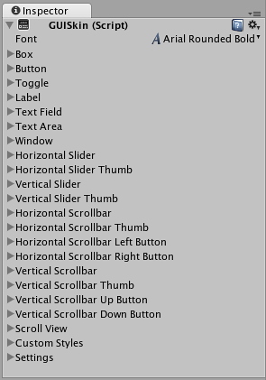

Functional Controls are necessary for your game, and the appearance of those controls is very important for the aesthetics of your game. In UnityGUI, you can fine-tune the appearance of your Controls with many details. Control appearances are dictated with GUIStyles. By default, when you create a Control without defining a GUIStyle, Unity’s default GUIStyle is applied. This style is internal in Unity and can be used in published games for quick prototyping, or if you choose not to stylize your Controls.
When you have a large number of different GUIStyles to work with, you can define them all within a single GUISkin. A GUISkin is no more than a collection of GUIStyles.
GUIStyles are designed to mimic Cascading Style Sheets (CSS) for web browsers. Many different CSS methodologies have been adapted, including differentiation of individual state properties for styling, and separation between the content and the appearance.
Where the Control defines the content, the Style defines the appearance. This allows you to create combinations like a functional Toggle which looks like a normal Button.
As stated earlier, GUISkins are a collection of GUIStyles. Styles define the appearance of a GUI Control. You do not have to use a Skin if you want to use a Style.
 A single GUISkin shown in the Inspector - observe that it contains multiple GUIStyles
All GUI Control functions have an optional last parameter: the GUIStyle to use for displaying the Control. If this is omitted, Unity’s default GUIStyle will be used. This works internally by applying the name of the control type as a string, so GUI.Button() uses the “button” style, GUI.Toggle() uses the “toggle” style, etc. You can override the default GUIStyle for a control by specifying it as the last parameter.
/* Override the default Control Style with a different style in the UnityGUI default Styles */
// JavaScript
function OnGUI () {
// Make a label that uses the "box" GUIStyle.
GUI.Label (Rect (0,0,200,100), "Hi - I'm a label looking like a box", "box");
// Make a button that uses the "toggle" GUIStyle
GUI.Button (Rect (10,140,180,20), "This is a button", "toggle");
}
// C#
using UnityEngine;
using System.Collections;
public class GUITest : MonoBehaviour {
void OnGUI () {
// Make a label that uses the "box" GUIStyle.
GUI.Label (new Rect (0,0,200,100), "Hi - I'm a label looking like a box", "box");
// Make a button that uses the "toggle" GUIStyle
GUI.Button (new Rect (10,140,180,20), "This is a button", "toggle");
}
}
When you declare a public GUIStyle variable, all elements of the Style will show up in the Inspector. You can edit all of the different values there.
/* Overriding the default Control Style with one you've defined yourself */
// JavaScript
var customButton : GUIStyle;
function OnGUI () {
// Make a button. We pass in the GUIStyle defined above as the style to use
GUI.Button (Rect (10,10,150,20), "I am a Custom Button", customButton);
}
// C#
using UnityEngine;
using System.Collections;
public class GUITest : MonoBehaviour {
public GUIStyle customButton;
void OnGUI () {
// Make a button. We pass in the GUIStyle defined above as the style to use
GUI.Button (new Rect (10,10,150,20), "I am a Custom Button", customButton);
}
}
When you have declared a GUIStyle, you can modify that style in the Inspector. There are a great number of States you can define, and apply to any type of Control.
Any Control State must be assigned a Background Color before the specified Text Color will be applied.
For more information about individual GUIStyles, please read the GUIStyle Component Reference page.
For more complicated GUI systems, it makes sense to keep a collection of styles in one place. This is what a GUISkin does. A GUISkin contains multiple different Styles, essentially providing a complete face-lift to all GUI Controls.
To create a GUISkin, select from the menu bar. This will create a GUI Skin in your Project Folder. Select it to see all GUIStyles defined by the Skin in the Inspector.
To use a skin you’ve created, assign it to GUI.skin in your OnGUI() function.
/* Make a property containing a reference to the skin you want to use */
// JavaScript
var mySkin : GUISkin;
function OnGUI () {
// Assign the skin to be the one currently used.
GUI.skin = mySkin;
// Make a button. This will get the default "button" style from the skin assigned to mySkin.
GUI.Button (Rect (10,10,150,20), "Skinned Button");
}
// C#
using UnityEngine;
using System.Collections;
public class GUITest : MonoBehaviour {
public GUISkin mySkin;
void OnGUI () {
// Assign the skin to be the one currently used.
GUI.skin = mySkin;
// Make a button. This will get the default "button" style from the skin assigned to mySkin.
GUI.Button (new Rect (10,10,150,20), "Skinned Button");
}
}
You can switch skins as much as you like throughout a single OnGUI() call.
/* Example of switching skins in the same OnGUI() call */
// JavaScript
var mySkin : GUISkin;
var toggle = true;
function OnGUI () {
// Assign the skin to be the one currently used.
GUI.skin = mySkin;
// Make a toggle. This will get the "button" style from the skin assigned to mySkin.
toggle = GUI.Toggle (Rect (10,10,150,20), toggle, "Skinned Button", "button");
// Assign the currently skin to be Unity's default.
GUI.skin = null;
// Make a button. This will get the default "button" style from the built-in skin.
GUI.Button (Rect (10,35,150,20), "Built-in Button");
}
// C#
using UnityEngine;
using System.Collections;
public class GUITest : MonoBehaviour {
public GUISkin mySkin;
private bool toggle = true;
void OnGUI () {
// Assign the skin to be the one currently used.
GUI.skin = mySkin;
// Make a toggle. This will get the "button" style from the skin assigned to mySkin.
toggle = GUI.Toggle (new Rect (10,10,150,20), toggle, "Skinned Button", "button");
// Assign the currently skin to be Unity's default.
GUI.skin = null;
// Make a button. This will get the default "button" style from the built-in skin.
GUI.Button (new Rect (10,35,150,20), "Built-in Button");
}
}
This example will show you how to dynamically change the font size through code.
First create a new project in Unity. Then make a C# script called Fontsize.cs and paste the following code in:
// C# example
using UnityEngine;
using System.Collections;
public class Fontsize : MonoBehaviour
{
void OnGUI ()
{
//Set the GUIStyle style to be label
GUIStyle style = GUI.skin.GetStyle ("label");
//Set the style font size to increase and decrease over time
style.fontSize = (int)(20.0f + 10.0f * Mathf.Sin (Time.time));
//Create a label and display with the current settings
GUI.Label (new Rect (10, 10, 200, 80), "Hello World!");
}
}
Save the script and attach it to an empty GameObject, click play to see the font loop through increasing and decreasing in size over time. You may notice that the font does not smoothly change size, this is becauses there is not an infinite number of font sizes.
This specific example requires that the default font (Arial) is loaded and marked as dynamic. You cannot change the size of any font that is not marked as dynamic.